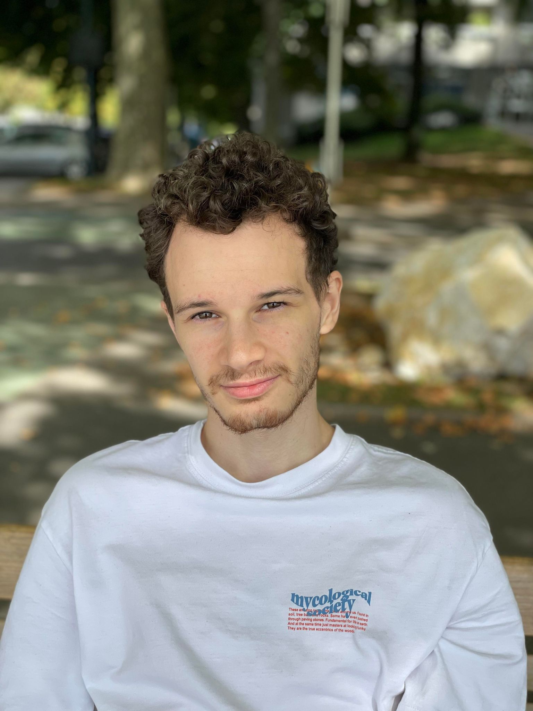

PORTFOLIO 2022
MAXENCE TISSELIN
UX & UI Designer
FRANCE CREATIVE DIGITAL DESIGNER
A PROPOS
Je m'appelle Maxence Tisselin, je suis passionné par le domaine du numérique depuis le collège. Je dispose d'un profil technique et créatif tourné vers le UI & UX. Je reste néanmoins assez polyvalent ce qui me permet d'intervenir sur les différentes échelles de la chaîne de production d'une réalisation. Au cours de mes expériences professionnelles, j'ai pu apprendre ainsi que répondre aux demandes techniques. Par ailleurs, je suis passionné par le cinéma ce qui me permet de développer un regard critique. Le sport compte aussi beaucoup pour moi, en particulier le hockey sur glace qui m'a apporté de la rigueur et la cohésion de groupe.
ETUDES
| 2020 - 2022 MASTER DEDI | TOULON |
Master en Création Numérique DEDI (Design d’Expérience et Design d’Interface), dédié aux métiers de la conception et de la réalisation de productions numériques dans les domaines des industries créatives et plus particulièrement sur les métiers de la conception et de la réalisation (design d’expérience et design d’interface), de la communication numérique et des services. |
| 2019 - 2020 LP ACORS | NANCY |
La licence Animation des Communautés et Réseaux Socio-numériques prépare l'étudiant aux métiers de la communication numérique des organisations via les réseaux socio-numériques : animation de communautés numériques, communication en ligne, e-réputation, référencement. La formation prend en compte à la fois les aspects techniques (informatique) et les aspects communicationnels. |
| 2017 - 2019 DUT MMI | SAINT-DIE DES VOSGES |
Le DUT Métiers du Multimédia et de l'Internet a pour objectif de fournir à l'étudiant l'ensemble des compétences nécessaires à la communication digitale, à la réalisation de sites internet, à l’animation de communautés, à la création vidéo et enfin à la conception de contenus. |
EXPERIENCES
| 2021 - 2022 4MURS | UX & UI DESIGNER METZ |
Année d’alternance au sein du projet QVATTOR (marque de vêtement). Les missions qui m'ont été confiées sont les suivantes :
|
| 2019 - 2020 INSTITUT DE SOUDURE | ASSISTANT DE COMMUNICATION YUTZ |
Année d’alternance, j’étais rattaché au responsable de projet afin d’effectuer les différentes actions de communication. Les missions qui m'ont été confiées sont les suivantes : Création de pictogrammes, flyers, kakemono, schémas graphiques, indexation des articles à destination du web, réalisation de différentes vidéos, création d’un storyboard, prise et retouche photos. |